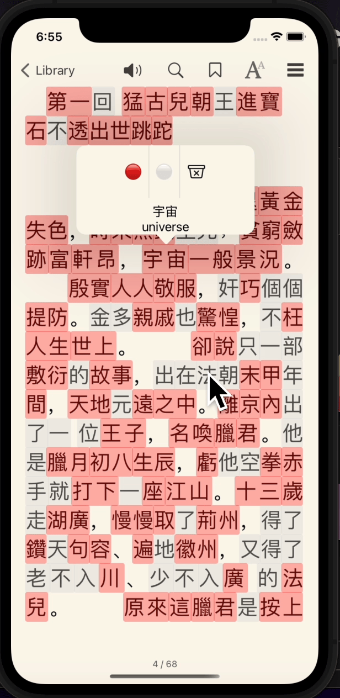
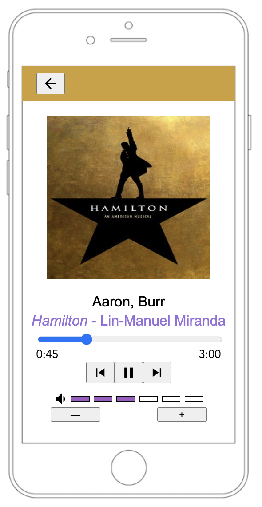

Projects I've done
Kan books
Trying to read in a foreign language like Chinese is a tough task. Figuring out which words to look up can be frustrating when words can be composed of any number of characters and they aren't distinguished by spacing. The Kanbooks IOS E-reader prototype automatically tokenizes page content by word, highlights unknown words for faster identification, and provides on the fly translation and pinyin romanizations for each word token. Kanbooks was built using the Readium framework to render EPUBs, Swift's NLP library, and GoogleTranslate's API
NUDM Mobile

Trying to read in a foreign language like Chinese is a tough task. Figuring out which words to look up can be frustrating when words can be composed of any number of characters and they aren't distinguished by spacing. The Kanbooks IOS E-reader prototype automatically tokenizes page content by word, highlights unknown words for faster identification, and provides on the fly translation and pinyin romanizations for each word token. Kanbooks was built using the Readium framework to render EPUBs, Swift's NLP library, and GoogleTranslate's API
iPod Player UI
I incorporated W3C WCAG accessibility guidelines into my HTML/CSS formatting and JavaScript code to create an accessibility focused iPod player. Front-end only